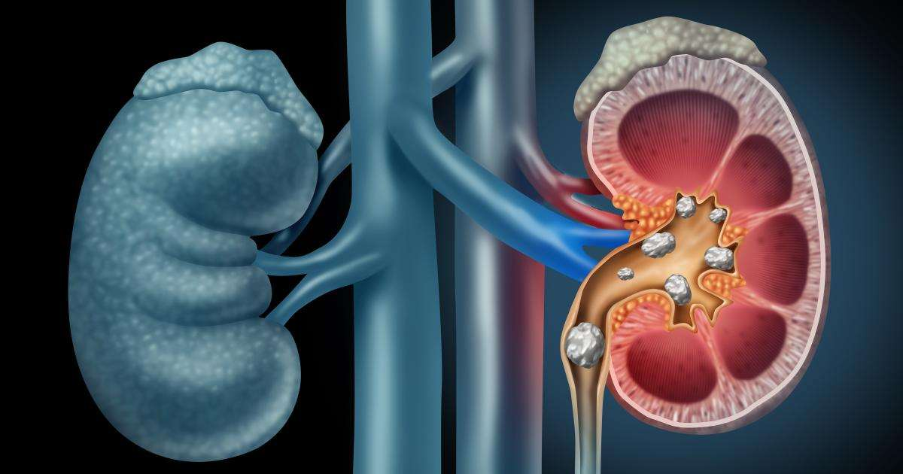

Kidney Stones

CAUSES
Kidney stones are formed from substances in your urine. The substances that combine into stones normally pass through your urinary system. When they don’t, it’s because there isn’t enough urine volume, causing the substances to become highly concentrated and to crystalize. This is typically a result of not drinking enough water.
SYMPTOMS
You can have a stone in your kidney for years and not know it’s there. But, when it starts to move or becomes very large, you may have symptoms. Symptoms of a kidney stone include:
- Feeling pain in your lower back or side of your body. This pain can start as a dull ache that may come and go. It can also become severe and result in a trip to the emergency room.
-
Having nausea and/or vomiting with the pain.
-
Seeing blood in your urine.
-
Feeling pain when urinating.
-
Being unable to urinate.
-
Feeling the need to urinate more often.
-
Fever or chills.
-
Having urine that smells bad or looks cloudy.
DIAGNOSIS
Your healthcare provider will discuss your medical history and possibly order some tests. These tests include:
- Imaging tests: An X-ray, CT scan and ultrasound will help your healthcare provider see the size, shape, location and number of your kidney stones. These tests help your provider decide what treatment you need.
-
Blood test: A blood test will reveal how well your kidneys are functioning, check for infection and look for biochemical problems that may lead to kidney stones.
-
Urine test: This test also looks for signs of infection and examines the levels of the substances that form kidney stones.
TREATMENTS
Once diagnosed, your healthcare provider will first determine if you even need treatment. Some smaller kidney stones may leave your system when you urinate. This can be very painful. If your provider decides that you do need treatment, your options include medications and surgery.